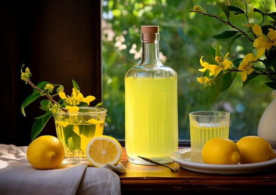
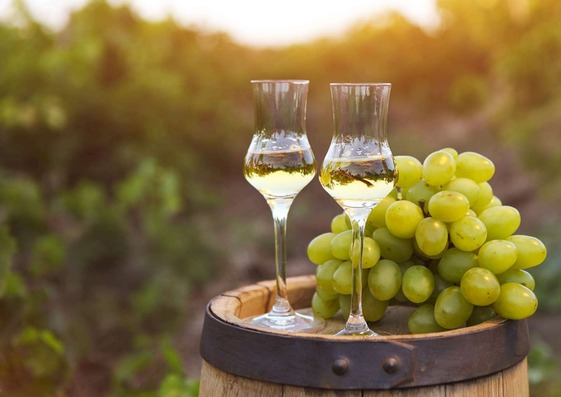
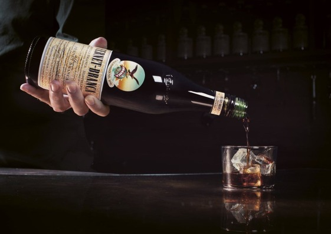
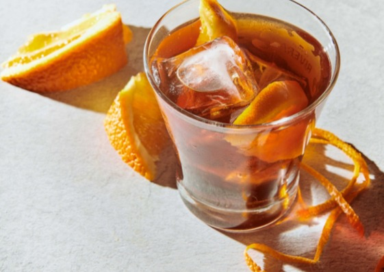
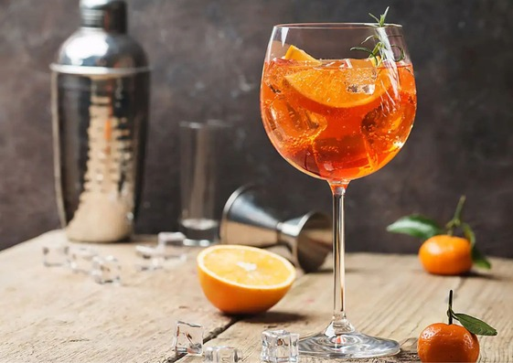
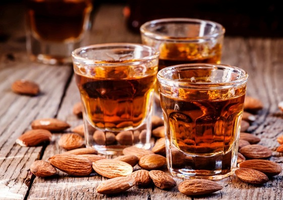
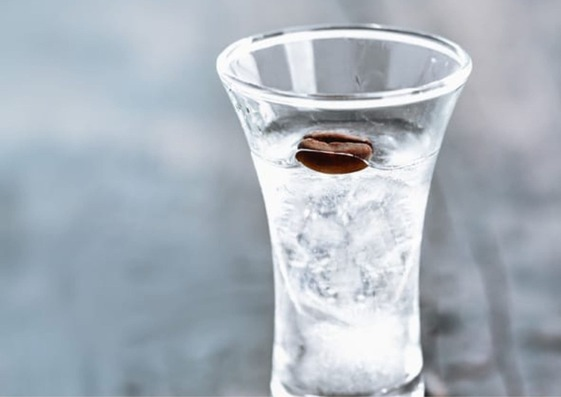
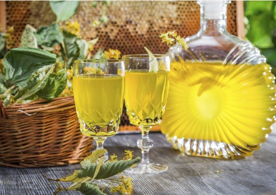
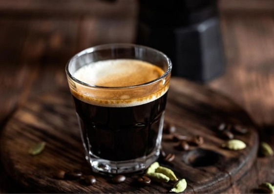
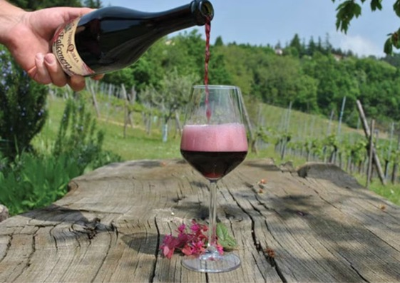

Bebidas típicas de Italia
El amaretto y el limoncello son las dos bebidas más famosas de Italia a nivel internacional. No obstante, hay muchas otras que te sorprenderán y enamorarán.
1. Limoncello: El Sol Líquido de la Costa Amalfitana
Directo desde el corazón de Campania, el limoncello es un elixir cítrico que captura la esencia de la costa Amalfitana. Este licor se crea a partir de la infusión de cáscaras de limón, un proceso que requiere paciencia.
¿El secreto de su característico color amarillo? Un mes de reposo en botella. Disfrútalo bien frío como digestivo, o dale un toque cítrico a tus postres favoritos.
2. Grappa: Un Brindis a la Tradición Italiana
La grappa, un aguardiente de orujo, es un clásico en las mesas italianas. Se obtiene de la destilación de los restos de la uva, y es el digestivo perfecto después de una comida abundante.
Acompáñala con quesos, fruta, chocolate o café para una experiencia inolvidable. ¡Pero cuidado! Su graduación alcohólica puede alcanzar los 60 grados.
3. Fernet: Un Sabor Intenso que Despierta los Sentidos
El fernet, con su sabor amargo y complejo, es una bebida que no deja indiferente a nadie. Elaborado con una mezcla de hierbas aromáticas, es un excelente digestivo.
Pruébalo solo, con café o combinado con refresco de cola. ¿Te atreves a descubrir su sabor único?
4. Vermouth: La Elegancia del Aperitivo Italiano
Desde el Piamonte, la cuna del vermouth, llega esta bebida aromática que conquista paladares. Elaborado con vinos blancos y una mezcla de hierbas y especias, el vermouth es el aperitivo perfecto.
Descubre sus diferentes variedades: seco, blanco o rojo, y disfruta de un momento de puro sabor italiano.
5. Spritz: El Aperitivo Italiano por Excelencia
El Spritz, con su inconfundible color naranja, es el rey del aperitivo italiano. Este cóctel refrescante, originario del norte de Italia, se elabora con vino blanco, tónica o agua con gas.
La versión más popular, el Aperol Spritz, combina vino espumoso, soda, naranja y licor de Aperol. ¡Un brindis a la dolce vita!
6. Amaretto: Un Dulce Amargo con Historia
"Un poco amargo", así se traduce amaretto, un licor con un equilibrio perfecto entre dulzura y amargor. Originario de Saronno, se elabora con huesos de albaricoque, almendras y hierbas aromáticas.
Con una graduación alcohólica de 30 grados, el amaretto es ideal para disfrutar solo o en cócteles.
7. Sambuca: El Dulce Sabor del Anís
La sambuca, un licor dulce con sabor a anís, es un clásico italiano que se disfruta solo, con hielo o con café.
Si eres amante de los sabores dulces, la sambuca te conquistará con su aroma y sabor únicos.
8. Strega: Un Elixir con Sabor a Leyenda
Cuenta la leyenda que la Strega fue creada por brujas durante una noche de luna llena. Este licor digestivo, con su color amarillo y sabor dulce, se elabora con más de 70 hierbas aromáticas.
Disfrútalo después de una comida abundante y déjate seducir por su sabor mágico.
9. Café Italiano: Un Ritual con Sabor a Tradición
El café es una institución en Italia, y los italianos lo disfrutan en múltiples formas. El expreso y el capuchino son solo dos ejemplos de la rica cultura cafetera italiana.
¿Cuál es tu favorito?
10. Vinos Italianos: Un Legado de Sabor y Tradición
Italia es tierra de vinos, con una larga tradición vitivinícola que se refleja en la calidad y variedad de sus vinos. El Chianti, el Piamonte, el Asti y el Lambrusco son solo algunos de los vinos italianos más emblemáticos.
El vino Lambrusco, y el Moscato dAsti son muy populares.